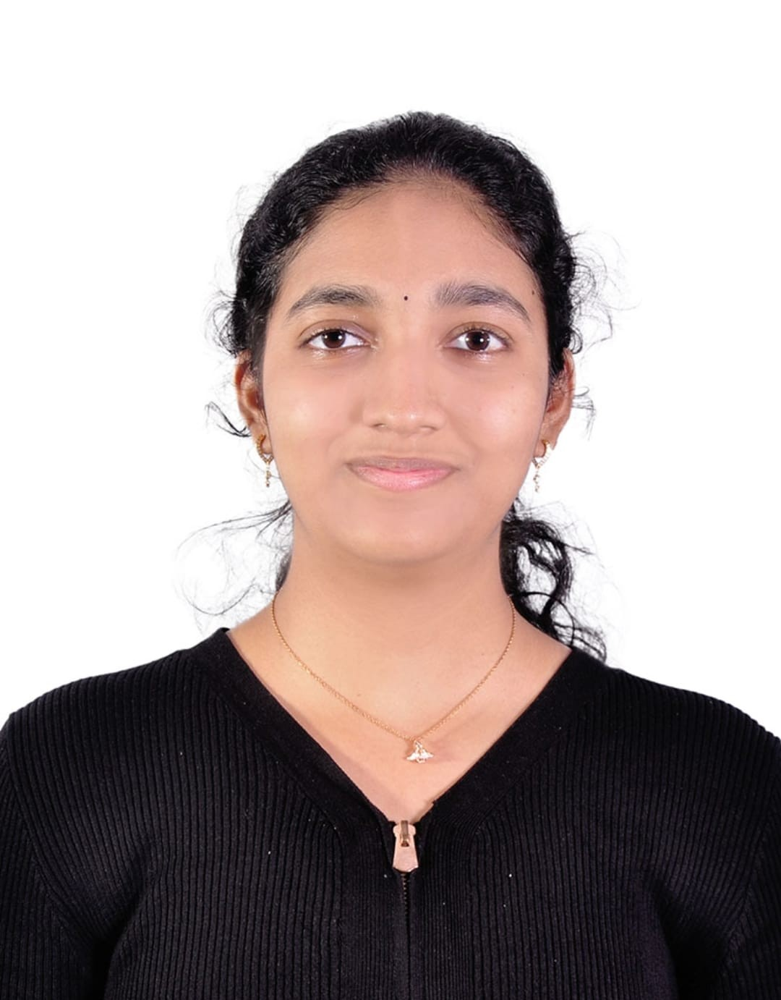

B.Tech (Mathematics & Computing) | BBA-DBE Student
I am a motivated student pursuing a dual degree in Mathematics & Computing and Business Administration. I am interested in problem-solving, analytics, and building practical solutions that combine technology and business.
I’ve always been curious about how things work — whether it’s patterns in numbers or decisions behind successful businesses. That curiosity is what led me to pursue a dual path in Mathematics & Computing and Business Administration.
On one side, I enjoy the precision of mathematics — breaking down problems, finding structure, and thinking logically. On the other, I’m equally drawn to the dynamic world of business — understanding strategy, people, and real-world impact.
I see myself at the intersection of these two worlds, where data meets decisions. I’m constantly learning, exploring, and looking for ways to turn ideas into something meaningful.
Email: chitnenihasini4@gmail.com
LinkedIn:Hasini Chitneni